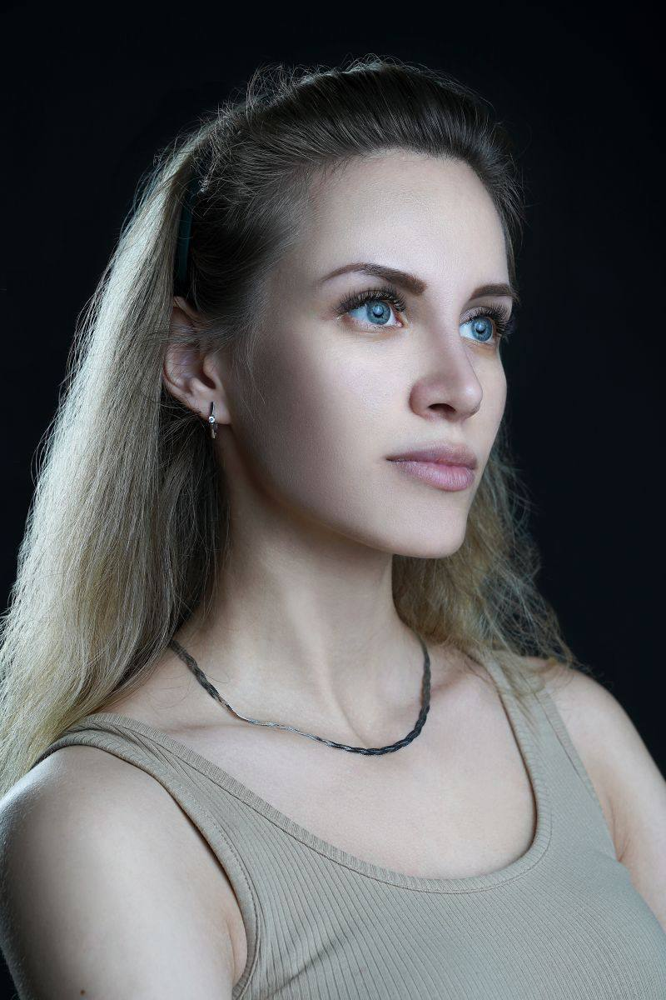

Daveed Lee

Lana Poloptror
Jack Polo
Nikolai Werol
| Purpuse Driven | We are privileged to invest on behalf of institutional investors, most with charitable, educational, or non-profit missions. Serving entrepreneurs is a calling for us, and we look to partner with companies with an equally strong sense of purpose. |
| Founder Oriented | The world's most iconic companies have been built and run by founders. We prefer to partner with management with an ownership mentality leaders with a vision for the future, creating value for all stakeholders, with an eye on the bottom line. |
Fundament als Focused |
We make initial investments in early-stage companies tackling emerging consumer and enterprise opportunities. We look to partner with management to build world-class businesses based on strong operating fundamentals and attractive unit economics. |
Uncommo nly Patient |
We are known for our uncommonly patient approach to building companies. We look for opportunities to deepen our relationships with high-performing companies, and can make significant capital commitments more than a decade after our initial investment. |
Contrarian by Nature |
We don't chase trends or hot sectors. We work from first principles, evaluating each team, company and market on its independent merits. We avoid overfunded areas and prefer companies taking idiosyncratic approaches to solving big problems |
| Airspase Link | Bench |
| Bitfinder | BrightEdge |
| CSC Generation | Candex |
| Chairish | Chowbus |
| How Do You Know? | Foxes and Hedgehogs
Entrepreneurship / Efficiency / Management |
| Foxes and Hedgehogs | "The fox knows many things; the hedgehog knows one big thing." - Archilochus, 8th century BC |
| Venture Lotto | For centuries, writers, poets and philosophers have pondered the
dichotomy of the Fox and the Hedgehog, In a business context, we first read about these characters in the book "Good to Great. According to its author, Jim Collins, |
| Vertical Markets: A Trillion Dollar Opportunity | *the fox is a cunning creature, able to devise a myriad of strategies for sneak attacks upon the hedgehog... Fast, sleek, beautiful, fleet of foot, and crafty - the fox looks like the sure winner. The hedgehog on the other hand, is a dowdier creature... He waddles along, going about his simple day, searching for lunch and taking care of his home... (but) despite the greater cunning of the fox, the hedgehog always wins.' |
| Beyond Competitive Advantage |
In our business, we've also thought about the Fox and the Hedgehog - and by observing them carefully, we've learned a few things. (The following comments may seem unconventional and a bit tongue in cheek, but based on real life characters in Silicon Valley). |
| Paradox of the Power Law in Venture Capital |
Foxes tend to be serial entrepreneurs. Hedgehogs tend to stay at one company forever. (Some people must think that Hedgehogs are related to dinosaurs). |
| The Series B Trap - And How to Avoid It | Foxes are very smart and quick on their feet. In meetings, if VCs try to nail them with tough questions, they will fire back great answers. Hedgehogs don't like meetings (especially with VCs) Foxes are well connected and excel at various games played in Silicon |
| Full Archive | Valley and on Sand Hill Road. Naturally, Foxes are great at raising capital - they thrive in bubble markets. Hedgehogs would rather bootstrap - they do far better during the inevitable crashes. |